Air Matters
Adaptive Indoor Planting System For Enhancement of IAQ(Indoor Air Quality)
Individual Work(Bachelor Thesis) Tutor: ZhuXiaocun Tool: Rhino, Grasshopper Skill: Performance Driven Design
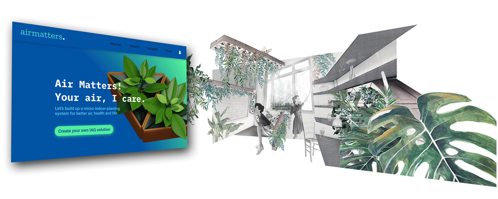
Brief
The serious problem of IAQ (Indoor Air Quality) is often ignored by us. However, We spend about nearly 80% a day on indoor activity, inhaling 8 m³ air in the indoor space. Nearly 64% Chinese suffer from chronic disease caused by poor indoor air every year. And indoor air quality can be 3-5 times worse than outdoor air. The IAQ issue is far more relative and urgent, also, the solution is far more attainble.
Question
How to improve indoor air quality with a sustainable and minimal intervention?
Solution
Create an adaptive indoor planting system to adress air problem from two perspectives: purify air directly and raise occupants’ awareness of air. Then implement solution in a space to test and interate.
Research
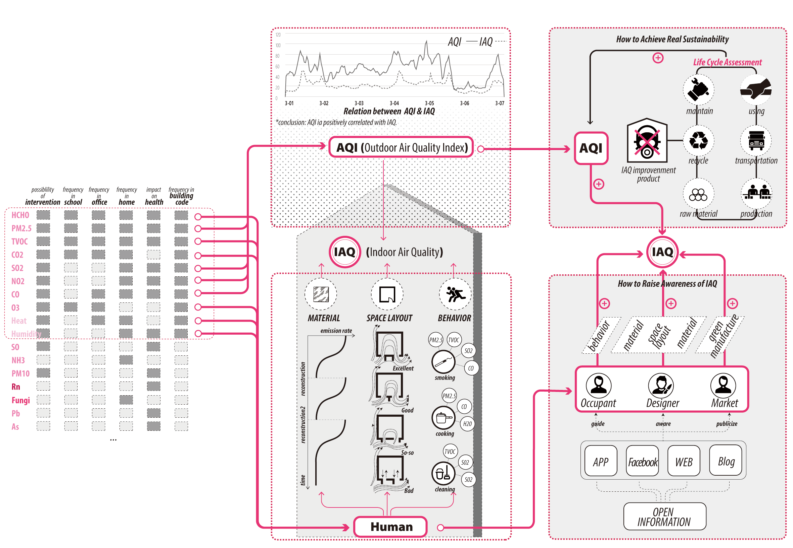
Conclusion:Two factors which give most impact on IAQ: Outdoor Air and Behavior of occupants
Initial Strategy
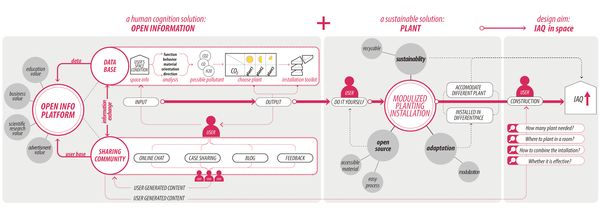
Open Information Platform and Physical "purifier" with plant
Part#1: How does Open-info Platform work?
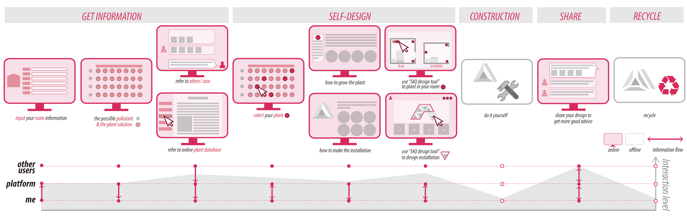
Part#2: Adaptive installation with plant
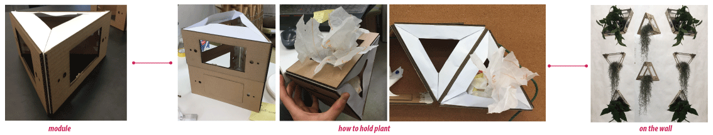
Structure & Material
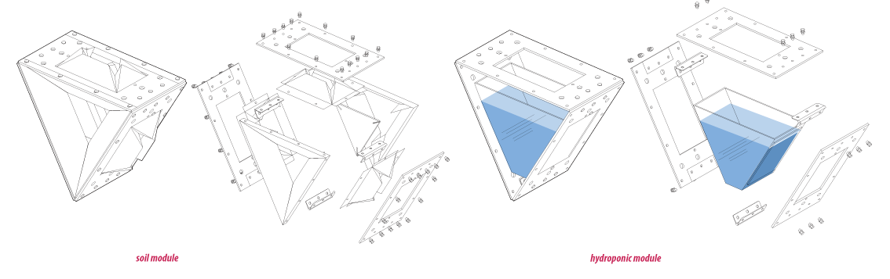
Both soil culture and hydroponics are considered.
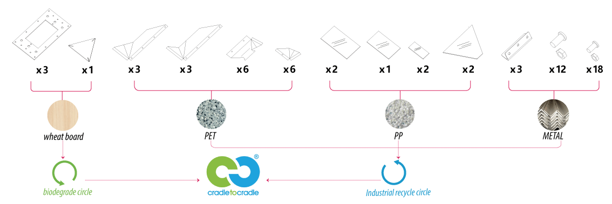
No adhesives are used. All the connection of components are detachable, so that each of them enter their own recycle path.
This conforms to “Cradle to Cradle”.
Folding Node
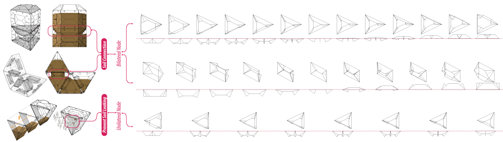
Onw-way node is for retaining soil in planting box.
Two-way node makes it possible to combine boxes.
Root Extension
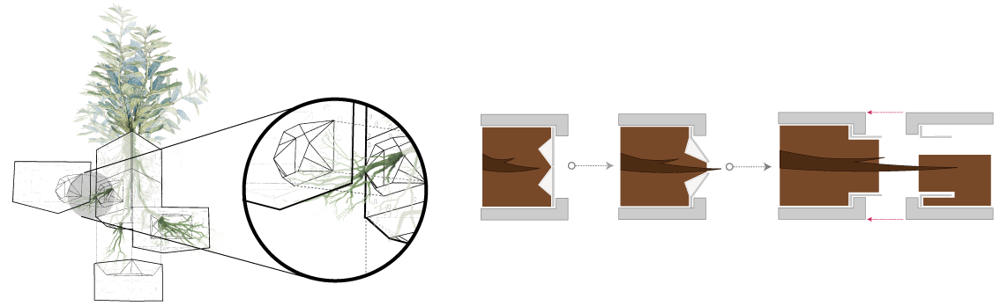
Double-sided Node make it possible for root extension.
Fully-extended root does good to plant growing.
Irrigation

Utilize height and pressure difference to create a energy-free and automatic irrigation system.
With it, user can take better care of the plant without watering it by himself everyday.
Combination Mode
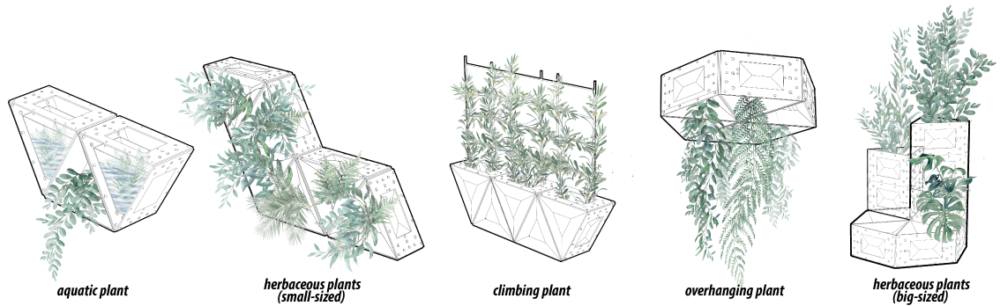
Different combination mode for different kind of plant.
Implement in Site
To explore more about my solution, also to test them, I did performance-driven test in a specific place: Biomimicry Design Lab in Tongji University. During this, I collect data to iterate and evaluate my design proposal.
Experiment Process
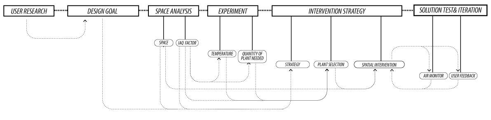
Design Goal
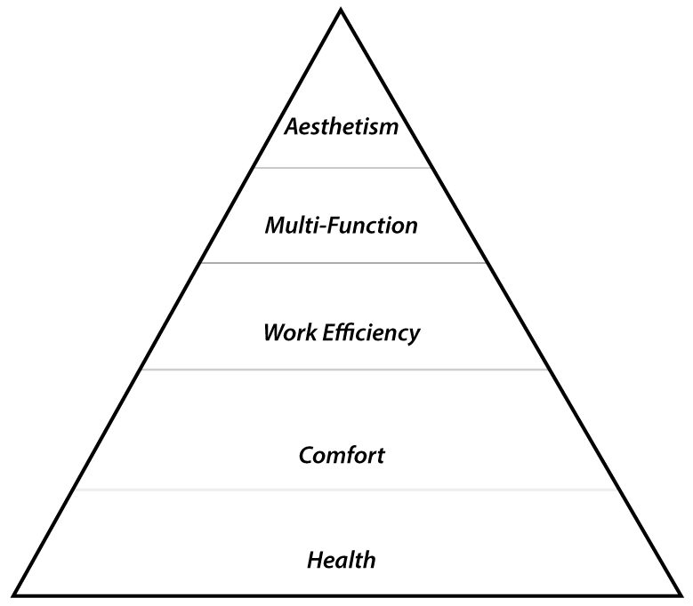
According to user research, conducted with a student in this lab, a hierachy of design requirements was to made. This gave a clear direction for prioritizing all design elements.
Space Analysis
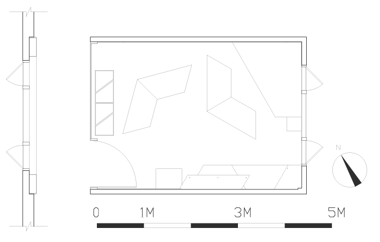
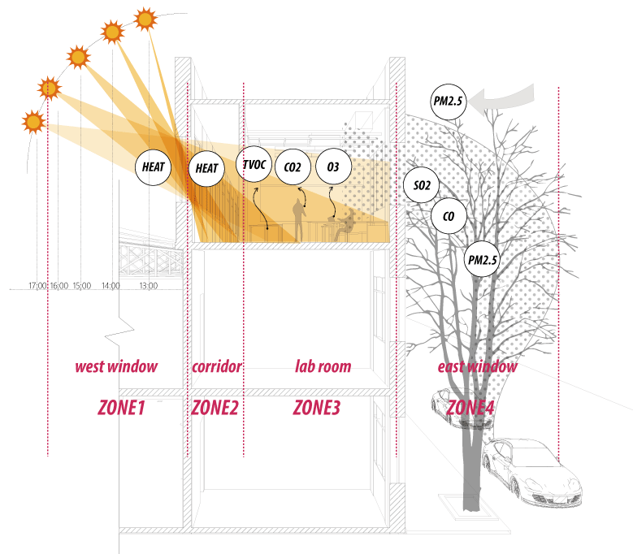
Space Layout
IAQ Pollution Factor
This is a 14 ㎡ workplace, with a big glass door facing directly to the west. From this analysis, the most siginificant negative factors are three:
- extreme temperature caused by western sun
- carbon dioxide pollution caused by occupation
- outdoor air pollution brought by wind
[4] Experiment
Thus, two experiemnts were conducted for two questions:
- How much temperature difference are caused by western sun?
- How much plant are needed for purifying air and lower CO2?
EXPERIMENT#1: Temperature
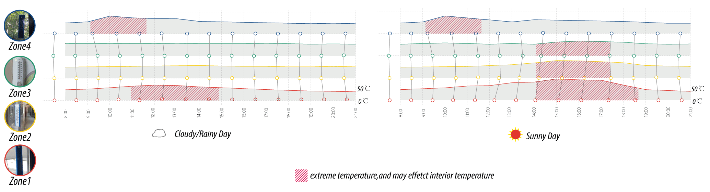
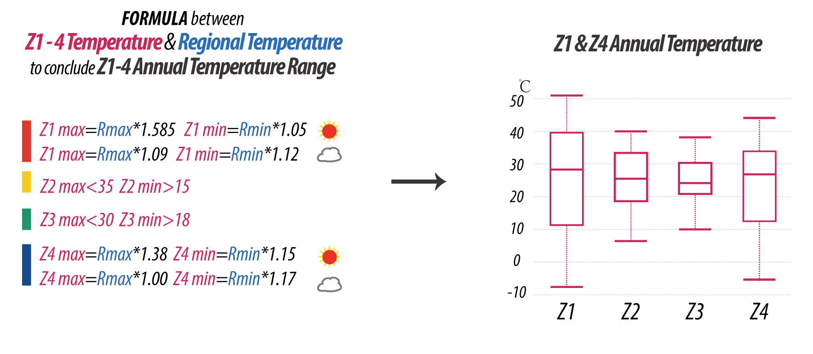
EXPERIMENT#2: Plant Quantity
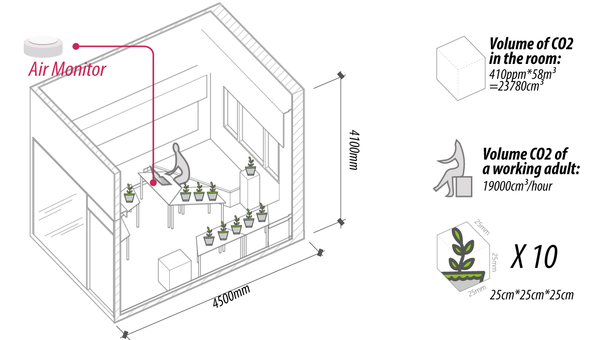
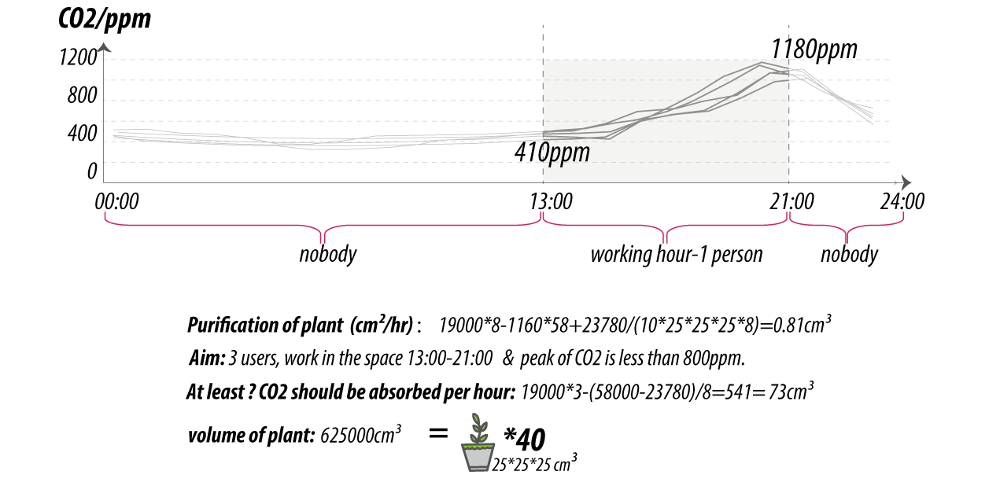
[5] Intervention Strategy
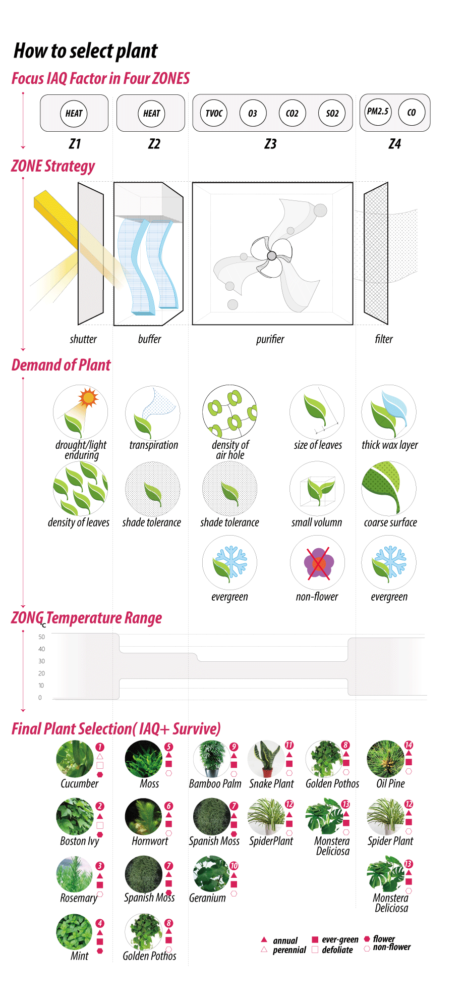

[6] Spatial Ecosystem
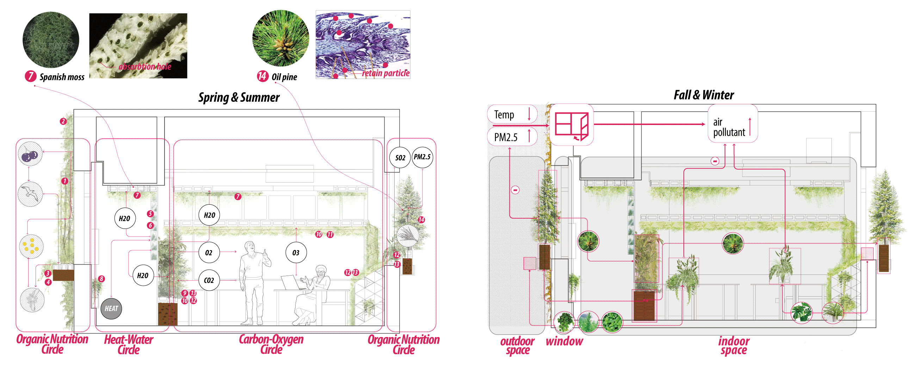
Final Usage Senario

Graduation Show
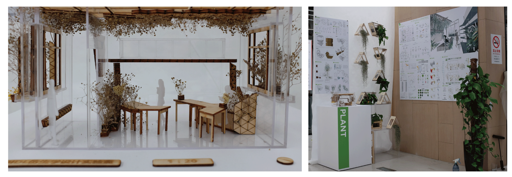